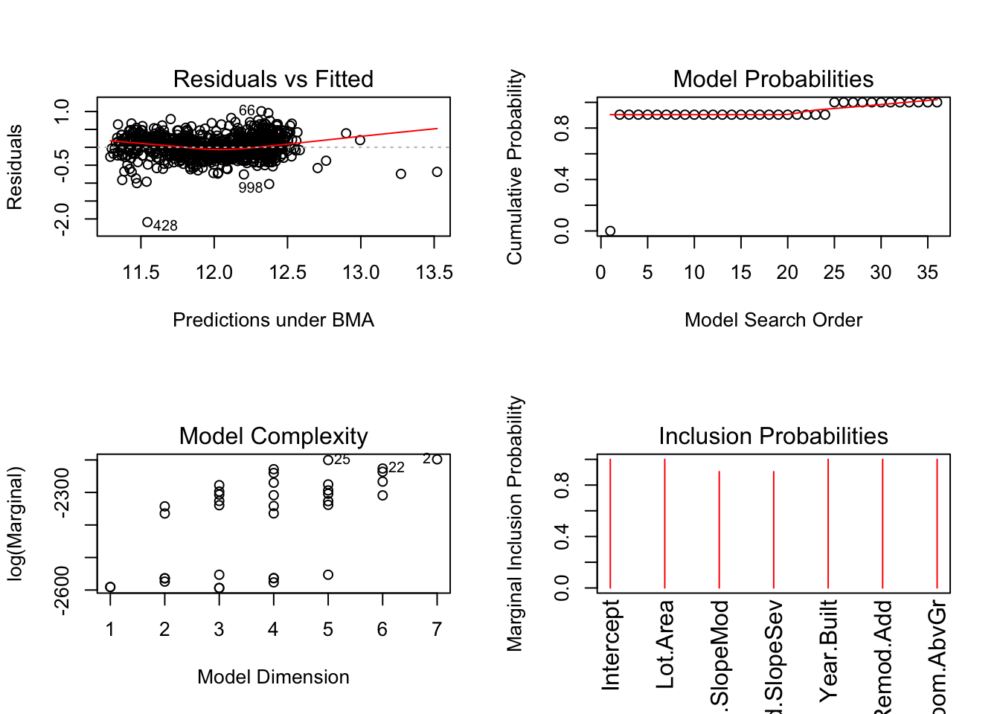
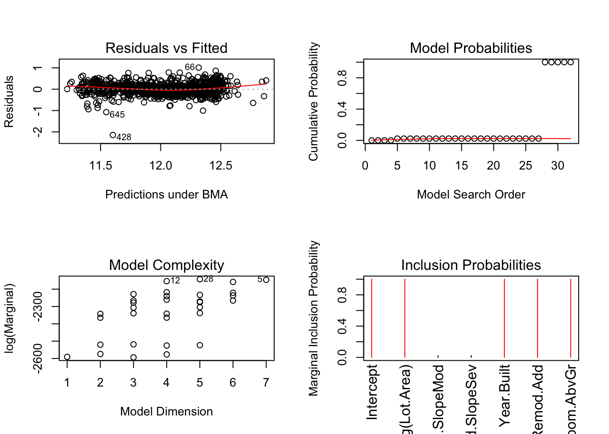

Exploratory data analysis
First, let us load the data and necessary packages:
load("ames_train.Rdata")
library(MASS)
library(dplyr)
library(ggplot2)
library(BAS)
library(broom)Make a labeled histogram (with 30 bins) of the ages of the houses in the data set, and describe the distribution.
# type your code for Question 1 here, and Knit
ames_train <- ames_train %>%
mutate(ages = 2019 - Year.Built)
ggplot(ames_train,aes(ages)) +
geom_histogram(aes(y = ..density..), bins = 30, colour = 'black', fill = 'white') +
geom_density(fill="blue", alpha = 0.2) +
labs(x = 'Ages of the houses in years', y = 'Number of houses', title = 'Ages of the houses in the data set (Acutal year - Year built)') +
scale_x_continuous(breaks = seq(0,160,10)) 
ames_train %>%
summarise(mean = mean(ages), median = median(ages), sd = sd(ages))## # A tibble: 1 x 3
## mean median sd
## <dbl> <dbl> <dbl>
## 1 46.8 44 29.6ANSWER: From the histogram above, we can see:
- The distribution of ages of the houses in the data set is right-skewed, logically we have a boundary on year 0.
- There are many houses around 15 years old whereas the mean is 46,8 and the median 44.
- Surprisingly there is a gap between houses of 25 and 40 years, that deserve further investigation because maybe it was a period where few houses were constructed.
The mantra in real estate is “Location, Location, Location!” Make a graphical display that relates a home price to its neighborhood in Ames, Iowa. Which summary statistics are most appropriate to use for determining the most expensive, least expensive, and most heterogeneous (having the most variation in housing price) neighborhoods? Report which neighborhoods these are based on the summary statistics of your choice. Report the value of your chosen summary statistics for these neighborhoods.
# type your code for Question 2 here, and Knit
df1 <- ames_train %>%
group_by(Neighborhood) %>%
summarise(mean = mean(price), median = median(price), sd = sd(price))
df1 %>%
arrange(desc(median)) %>%
select(Neighborhood, median) %>%
slice(1:5)## # A tibble: 5 x 2
## Neighborhood median
## <fct> <dbl>
## 1 StoneBr 340692.
## 2 NridgHt 336860
## 3 NoRidge 290000
## 4 GrnHill 280000
## 5 Timber 232500df1 %>%
arrange(median) %>%
select(Neighborhood, median) %>%
slice(1:5)## # A tibble: 5 x 2
## Neighborhood median
## <fct> <dbl>
## 1 MeadowV 85750
## 2 BrDale 98750
## 3 IDOTRR 99500
## 4 OldTown 120000
## 5 Blueste 123900df1 %>%
arrange(desc(sd)) %>%
select(Neighborhood, sd) %>%
slice(1:5)## # A tibble: 5 x 2
## Neighborhood sd
## <fct> <dbl>
## 1 StoneBr 123459.
## 2 NridgHt 105089.
## 3 Timber 84030.
## 4 Veenker 72545.
## 5 Crawfor 71268.ggplot(ames_train, aes(Neighborhood, price / 1000)) +
geom_boxplot(aes(colour = Neighborhood)) +
theme(axis.text.x = element_text(angle = 90)) +
theme(legend.position = "none") +
labs(y = 'Price (in thousand of dollars)', title = 'Price by Neighborhood')ANSWER: The summary statistic most appropiate for determining the most expensive and least expensive neighborhoods is the median, because it is not very affected by outliers. The most appropiate for determining heterogeneous neighborhood is the standard deviation.
- Most expensive -> StoneBr
- Least expensive -> MeadowV
- Most heterogeneous -> StoneBr
Which variable has the largest number of missing values? Explain why it makes sense that there are so many missing values for this variable.
# type your code for Question 3 here, and Knit
sort(colSums(is.na(ames_train)), decreasing = TRUE)[1:5]## Pool.QC Misc.Feature Alley Fence Fireplace.Qu
## 997 971 933 798 491ANSWER: The variable with more missing values is Pool Quality. This is because when the house does not have a swimming pool it appears on the dataset as nan. Therefore in the dataset there are 997 houses without a swimming pool.
We want to predict the natural log of the home prices. Candidate explanatory variables are lot size in square feet (Lot.Area), slope of property (Land.Slope), original construction date (Year.Built), remodel date (Year.Remod.Add), and the number of bedrooms above grade (Bedroom.AbvGr). Pick a model selection or model averaging method covered in the Specialization, and describe how this method works. Then, use this method to find the best multiple regression model for predicting the natural log of the home prices.
# type your code for Question 4 here, and Knit
lm_bas = bas.lm(log(price) ~ Lot.Area + Land.Slope + Year.Built + Year.Remod.Add + Bedroom.AbvGr, data = ames_train,
prior = 'BIC',
modelprior = uniform())## Warning in model.matrix.default(mt, mf, contrasts): non-list contrasts
## argument ignoredround(summary(lm_bas), 3)## P(B != 0 | Y) model 1 model 2 model 3 model 4
## Intercept 1.000 1.000 1.000 1.000 1.000
## Lot.Area 1.000 1.000 1.000 1.000 1.000
## Land.SlopeMod 0.904 1.000 0.000 1.000 0.000
## Land.SlopeSev 0.904 1.000 0.000 1.000 0.000
## Year.Built 1.000 1.000 1.000 1.000 1.000
## Year.Remod.Add 1.000 1.000 1.000 1.000 1.000
## Bedroom.AbvGr 1.000 1.000 1.000 0.000 0.000
## BF NA 1.000 0.106 0.000 0.000
## PostProbs NA 0.904 0.096 0.000 0.000
## R2 NA 0.562 0.554 0.534 0.525
## dim NA 7.000 5.000 6.000 4.000
## logmarg NA -2198.167 -2200.410 -2226.424 -2228.480
## model 5
## Intercept 1.000
## Lot.Area 0.000
## Land.SlopeMod 1.000
## Land.SlopeSev 1.000
## Year.Built 1.000
## Year.Remod.Add 1.000
## Bedroom.AbvGr 1.000
## BF 0.000
## PostProbs 0.000
## R2 0.524
## dim 6.000
## logmarg -2236.437print(lm_bas)##
## Call:
## bas.lm(formula = log(price) ~ Lot.Area + Land.Slope + Year.Built +
## Year.Remod.Add + Bedroom.AbvGr, data = ames_train, prior = "BIC",
## modelprior = uniform())
##
##
## Marginal Posterior Inclusion Probabilities:
## Intercept Lot.Area Land.SlopeMod Land.SlopeSev
## 1.000 1.000 0.904 0.904
## Year.Built Year.Remod.Add Bedroom.AbvGr
## 1.000 1.000 1.000image(lm_bas, rotate = F)ames_coef = coef(lm_bas)
ames_coef##
## Marginal Posterior Summaries of Coefficients:
##
## Using BMA
##
## Based on the top 33 models
## post mean post SD post p(B != 0)
## Intercept 1.202e+01 8.831e-03 1.000e+00
## Lot.Area 1.013e-05 1.184e-06 1.000e+00
## Land.SlopeMod 1.251e-01 6.257e-02 9.040e-01
## Land.SlopeSev -4.129e-01 1.971e-01 9.040e-01
## Year.Built 6.046e-03 3.792e-04 1.000e+00
## Year.Remod.Add 6.789e-03 5.481e-04 1.000e+00
## Bedroom.AbvGr 8.688e-02 1.078e-02 1.000e+00confint(ames_coef)## 2.5% 97.5% beta
## Intercept 1.200145e+01 1.203603e+01 1.201847e+01
## Lot.Area 7.730925e-06 1.236903e-05 1.012662e-05
## Land.SlopeMod 0.000000e+00 2.191468e-01 1.251455e-01
## Land.SlopeSev -6.989198e-01 0.000000e+00 -4.128938e-01
## Year.Built 5.274440e-03 6.760363e-03 6.046237e-03
## Year.Remod.Add 5.739091e-03 7.876729e-03 6.788766e-03
## Bedroom.AbvGr 6.617872e-02 1.083440e-01 8.687950e-02
## attr(,"Probability")
## [1] 0.95
## attr(,"class")
## [1] "confint.bas"# best = which.max(lm_bas$logmarg)
# bestmodel = lm_bas$which[[best]] + 1
# plot(ames_coef, subset = c(bestmodel), ask = FALSE)
plot(confint(ames_coef, parm = 2:ames_coef$n.vars))## Warning in arrows(x[not.deg], ci[not.deg, 1], x[not.deg], ci[not.deg,
## 2], : zero-length arrow is of indeterminate angle and so skipped## NULLANSWER: In order to do model averaging we use the BAS package. To represent model uncertainty, we need to construct a probability distribution over all possible models where each probability provides measure of how likely the model is to happen.
From the information above, we can conclude that the best model include all the vairables:
log(price) ~ Lot.Area + Land.Slope + Year.Built + Year.Remod.Add + Bedroom.AbvGr
The posterior probability of the best model is 0.904, and the R-squared associated is 0.562 what means that the 56% of the variance on the response variable is explained by the model.
The coefficients of each variable are represented in the table and plot below with a confidence interval of 95%.
Which home has the largest squared residual in the previous analysis (Question 4)? Looking at all the variables in the data set, can you explain why this home stands out from the rest (what factors contribute to the high squared residual and why are those factors relevant)?
# type your code for Question 5 here, and Knit
plot(lm_bas, which = 1)house_428 <- ames_train %>%
slice(428)ANSWER: The home with the larges squared residual is the number 428. With the following characteristics:
- Lot Area: 9656
- Land Slope: Gentle slope
- Year Built: 1920
- Year Remod: 1970
- Bedrrom AbvGr: 2
The residual is negative, what means we have predicted the price upper the real price of the house. Looking at the dataset we know that the house is very old and the overall quality and overall condition is poor. So it would be interesting to introduce one of both characteristics in the model to predict better its value.
Use the same model selection method you chose in Question 4 to again find the best multiple regression model to predict the natural log of home prices, but this time replacing Lot.Area with log(Lot.Area). Do you arrive at a model including the same set of predictors?
# type your code for Question 6 here, and Knit
lm_bas_2 = bas.lm(log(price) ~ log(Lot.Area) + Land.Slope + Year.Built + Year.Remod.Add + Bedroom.AbvGr, data = ames_train,
prior = 'BIC',
modelprior = uniform())## Warning in model.matrix.default(mt, mf, contrasts): non-list contrasts
## argument ignoredround(summary(lm_bas), 3)## P(B != 0 | Y) model 1 model 2 model 3 model 4
## Intercept 1.000 1.000 1.000 1.000 1.000
## Lot.Area 1.000 1.000 1.000 1.000 1.000
## Land.SlopeMod 0.904 1.000 0.000 1.000 0.000
## Land.SlopeSev 0.904 1.000 0.000 1.000 0.000
## Year.Built 1.000 1.000 1.000 1.000 1.000
## Year.Remod.Add 1.000 1.000 1.000 1.000 1.000
## Bedroom.AbvGr 1.000 1.000 1.000 0.000 0.000
## BF NA 1.000 0.106 0.000 0.000
## PostProbs NA 0.904 0.096 0.000 0.000
## R2 NA 0.562 0.554 0.534 0.525
## dim NA 7.000 5.000 6.000 4.000
## logmarg NA -2198.167 -2200.410 -2226.424 -2228.480
## model 5
## Intercept 1.000
## Lot.Area 0.000
## Land.SlopeMod 1.000
## Land.SlopeSev 1.000
## Year.Built 1.000
## Year.Remod.Add 1.000
## Bedroom.AbvGr 1.000
## BF 0.000
## PostProbs 0.000
## R2 0.524
## dim 6.000
## logmarg -2236.437round(summary(lm_bas_2), 3)## P(B != 0 | Y) model 1 model 2 model 3 model 4
## Intercept 1.000 1.000 1.000 1.000 1.000
## log(Lot.Area) 1.000 1.000 1.000 1.000 1.000
## Land.SlopeMod 0.023 0.000 1.000 0.000 1.000
## Land.SlopeSev 0.023 0.000 1.000 0.000 1.000
## Year.Built 1.000 1.000 1.000 1.000 1.000
## Year.Remod.Add 1.000 1.000 1.000 1.000 1.000
## Bedroom.AbvGr 1.000 1.000 1.000 0.000 0.000
## BF NA 1.000 0.024 0.000 0.000
## PostProbs NA 0.977 0.023 0.000 0.000
## R2 NA 0.603 0.606 0.591 0.593
## dim NA 5.000 7.000 4.000 6.000
## logmarg NA -2142.565 -2146.306 -2153.733 -2158.390
## model 5
## Intercept 1.000
## log(Lot.Area) 1.000
## Land.SlopeMod 0.000
## Land.SlopeSev 0.000
## Year.Built 1.000
## Year.Remod.Add 0.000
## Bedroom.AbvGr 1.000
## BF 0.000
## PostProbs 0.000
## R2 0.536
## dim 4.000
## logmarg -2217.738ANSWER: We do not arrive to the same model. This time the predictor Land Slope is not included in the model. It goes from having a probability of being included in the model from 0.904 to 0.023. Notice with this new model the R-squared increases to 0.603, therefore this model is able to explain better the variance on the response variable.
Do you think it is better to log transform Lot.Area, in terms of assumptions for linear regression? Make graphs of the predicted values of log home price versus the true values of log home price for the regression models selected for Lot.Area and log(Lot.Area). Referencing these two plots, provide a written support that includes a quantitative justification for your answer in the first part of question 7.
# type your code for Question 7 here, and Knit
predicted_values <- predict(lm_bas, estimator = 'BPM', se.fit = TRUE)
predicted_values_log <- predict(lm_bas_2, estimator = 'BPM', se.fit = TRUE)
ames_train$predicted_price = predicted_values$fit
ames_train$predicted_price_log = predicted_values_log$fit
ggplot(ames_train, aes(predicted_price, log(price))) +
geom_point()ggplot(ames_train, aes(predicted_price_log, log(price))) +
geom_point()par(mfrow = c(2,2))
plot(lm_bas)
plot(lm_bas_2)
ANSWER: In both models, the linearity and variance of the residuals are met. In the model with log(Lot.Area) the R-squared is higher and the model also has fewer predictors (the model is simplest). So we can conclude that is better to log transform Lot.Area.